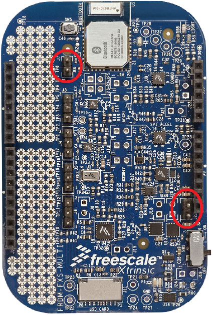
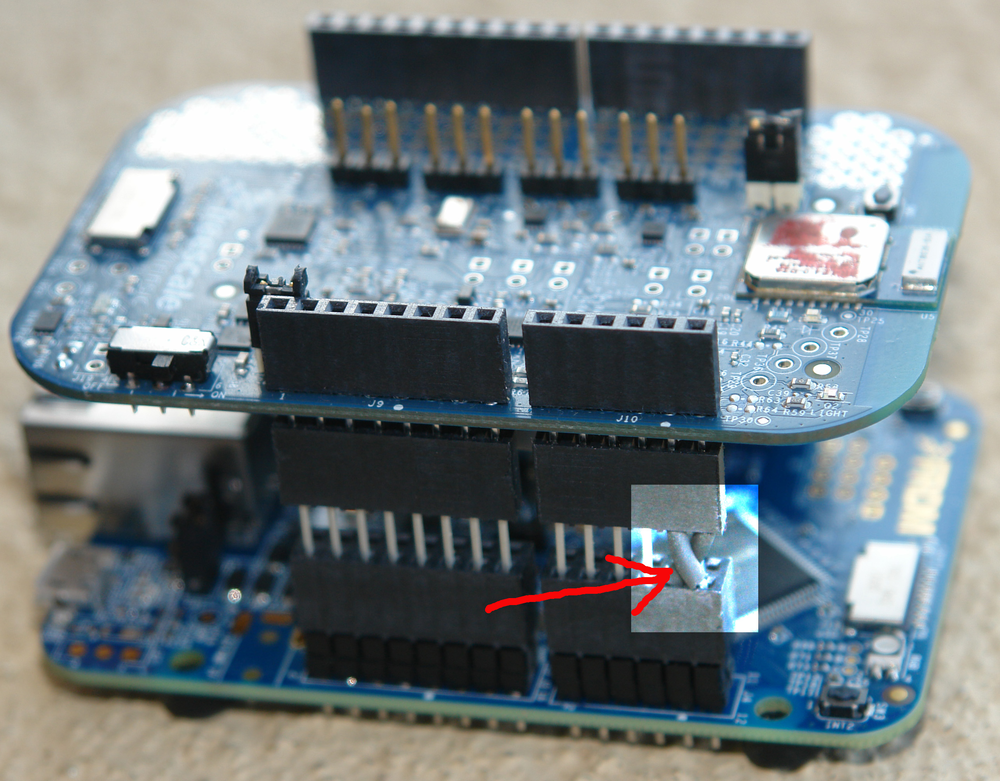

This application is designed to highlight features of Freescale 9-axis sensor fusion as implemented on various Freescale and 3rd party demo boards. However, many program features (those that depend upon sensors in your Android device) will work perfectly well without a board. The Quick Links section above provides easy access to hardware and software components that can be used with this application. Additional details are supplied in the sections that follow.
Device, Panorama and Data Logger Views each include a "Source" button which can be used to select between several possible sources of data. These are:
This board was developed for use by Freescale developers. It's socketed architecture allows for easy swapout of sensors and interface boards, but it is not optimized for mass production. As seen above, it utilizes a small 16-pin breakout board which includes Freescale gyro and 6-axis mag/accel combination device. It also includes a third party Bluetooth (2.x) module. This board is not available outside Freescale.
The Wi-Go module is available directly from Avnet. It is designed to be compatible with the Freescale FRDM-KL25Z Freedom Board (which Avnet also supplies). The Wi-Go module includes the following features:
WARNING!: Both Wi-Go and your Android device must be connected to the SAME wireless network!. This may seem obvious, but many times there are multiple, physically overlapping, networks available. If you have selected Wi-Go, but the "Device" screen seems unresponsive, that may be your problem.
Consult The Avnet Wi-Go page for details regarding embedded code installation and use.
This board/shield combination uses the same Bluetooth protocol specified in Freescale Sensor Fusion Development Platform above. The base board is built around a Cortex-M0+ Kinetis MCU. Because the Freescale fusion libraries are high optimized, this board provides enough muscle to compute the following algorithms simultaneously:
The reset button on the Freedom board resets both the main board and shield (including Bluetooth) components.
The FRDM-FXS-MULTI board is available in several flavors. They vary based upon which portions of the board are populated. You need the FRDM-FXS-MULTI-B, which includes a Bluetooth module, the FXAS21000 gyro and FX0S8700CQ 6-axis magnetometer plus accelerometer. Make sure that you install jumpers on J7 and J22 on the FRDM-FXS-MULTI-B board (see the figure below).

In addition to the sensors above, the FRDM-FXS-MULTI-B also supports the MAG3110 magnetometer and the MMA8652FC accelerometer. These are also supported by the Xtrinsic Sensor Fusion Library for Kinetis, and are transparently supported by this application.
Follow this link to view the Bluetooth Packet Structure
This board/shield combination is very similar to the FRDM-KL25Z / FRDM-FXS-MULTI-B combination above, although the FRDM-K20D50M board is colored red. It uses the same Bluetooth protocol (specified in Freescale Sensor Fusion Development Platform) and runs the same algorithm set described in the section above. This combination uses an MK20DX128VLH5 Cortex-M4 Kinetis processor, and can be considered the "big brother" to the KL25Z128VLK4 used on the FRDM-KL25Z.
This board/shield combination is very similar to the FRDM-KL25Z / FRDM-FXS-MULTI-B combination above. It uses the same Bluetooth protocol (specified in Freescale Sensor Fusion Development Platform) and runs the same algorithm set described in the sections above. This combination uses the latest generation MKL26Z128VLH4 Cortex M0+ Kinetis processor.
This board/shield combination is very similar to the FRDM-KL25Z / FRDM-FXS-MULTI-B combination above, although the FRDM-KL46Z board is colored red. It uses the same Bluetooth protocol (specified in Freescale Sensor Fusion Development Platform) and runs the same algorithm set described in the sections above. This combination uses the latest generation MKL46Z256VLL4 Cortex M0+ Kinetis processor. The KL46Z includes an LCD display on its top side, which will not be visible with the FRDM-FXS-MULTI-B in place.
The base board in this combination is the K64F Freedom board based on the MK64FN1M0VLL12 MCU. This device utilizes a 120MHz Cortex M4 with floating point unit, and the fusion software has been optimized to take advantage of the FPU. The result is a blazingly fast hardware platform which utilizes only a fraction of its capabilities for sensor fusion computations, leaving you lots of room for expansion.
The board/shield combination uses the same Bluetooth protocol and algorithm set used in the other Freedom board configurations.

Please note that revision C K64F boards and earlier have an error in the routing of the I2C SDA/SCL lines on pins PTC11:10 on the board headers. The figure above illustrates use of additional header connectors to swap those two signals. Revision D and later boards do not need this workaround.
The FRDM-FXS-MULTI-B board communicates via a 3rd party Bluetooth module. You must perform a Bluetooth pairing operation between your Android device and the Freescale sensor board prior to using any Bluetooth dependent features. Consult the manual of your Android device to determine the specific process for your device. When pairing, look for a Bluetooth device which follows the following naming convention: BlueRadios[ID number]. This convention can be changed by modifying the "Bluetooth device prefix" field in the Preferences screen.
You will need to check the "Automatically enable Bluetooth on entry" checkbox in the Preferences screen before you use your board for the first time. Then exit and restart the application. Because it takes a number of seconds to go through Bluetooth initialization, the application does it at startup. This implies that your Bluetooth device must be available and active BEFORE starting the app. You will not be able to select any of the "Source/Algorithm" options corresponding to your board until the Bluetooth link has been established (they will be grayed out on the popup menu). After the Bluetooth link is established, you can switch data sources to/from Bluetooth as often as you like. Once started, the data stream is continuous, even when not being consumed.
If you lose communications, or are unable to start it in the first place:
This application uses the Bluetooth RFCOMM protocol.
Follow this link to view the Bluetooth Packet Structure
This application was originally developed on a Motorola Xoom tablet running Android 4.0.x, however it only requires Android 3.0.x (Ice Cream Sandwich) or later to run.
The application is compatible with template projects supplied as part of the Xtrinsic Sensor Fusion Library for Kinetis MCUs, which can be downloaded from http://www.freescale.com/sensorfusion. The library installer has options to supply pre-compiled s-record files that can be installed on your Freedom board via the standard drag & drop interface, as well as the full CodeWarrior-based development kit. When properly configured, KL25Z, KL26Z, K20D50M and K64F boards will enumerate as mass storage devices when connected to your PC via a USB cable attached to the OpenSDA mini-USB port on the board. Further details of the OpenSDA interface can be found in the OpenSDA User's Guide.
The fusion library is also available via links on the download tabs on the web pages for each of the compatible Freedom boards. Links are provided at the top of the Overview page of this documentation.
In addition, we have "field reports" that the device works on:
Continue to Data Logging Features.